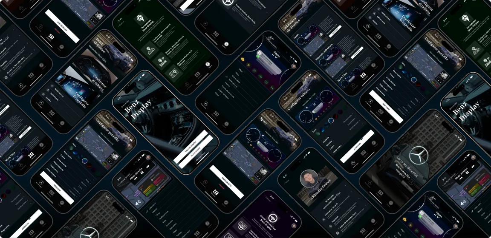
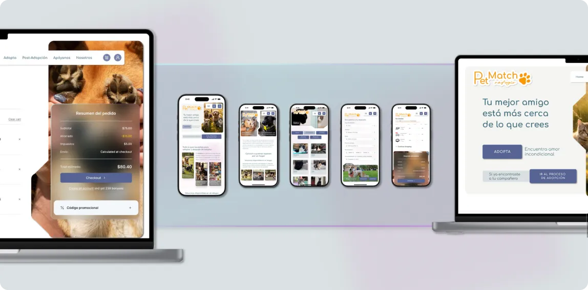

Casos de estudio · UX/UI
proyectos
Cada caso muestra el problema, cómo investigué, qué decidí y por qué, y qué cambió después de probar con usuarios.
Filtrar
Caso 01 · App móvil · Concepto
benz display
Una app para que cada conductor configure su tablero y su pantalla según el viaje, sin distraerse al manejar.


Caso 02 · Web app · Concepto
petmatch
Adopción de mascotas por compatibilidad y acompañamiento después de adoptar.

Caso 03 · App + web · Concepto
park planner
Ciudadanos y planificadores deciden el parque que se necesita.

Caso 04 · Fintech · Prueba de ascenso
voltbank autoconvert
Rediseñé el flujo de activación de AutoConvert, donde el 62% de los usuarios abandonaba.